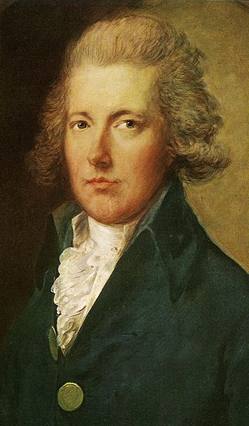
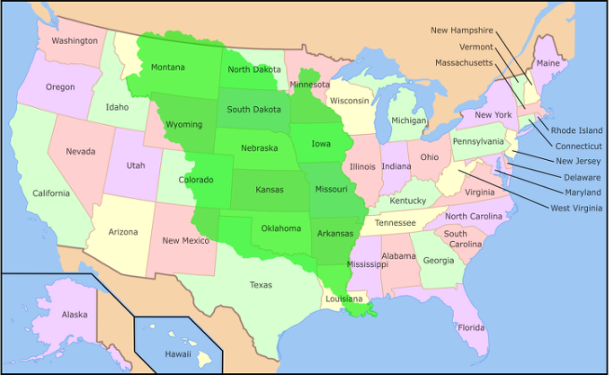
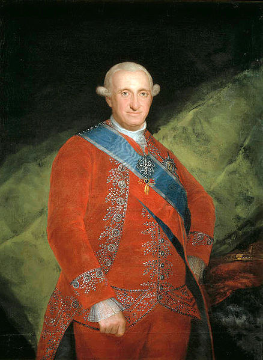
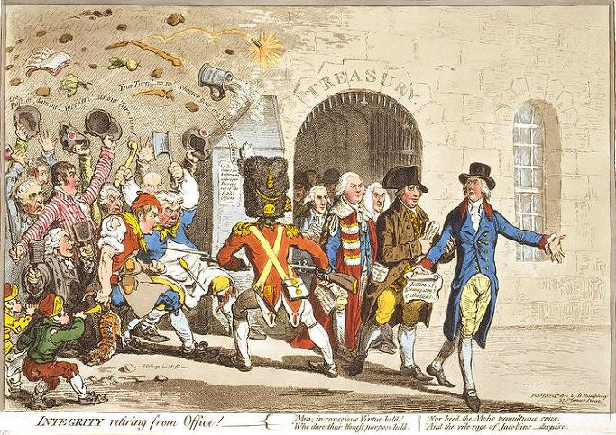
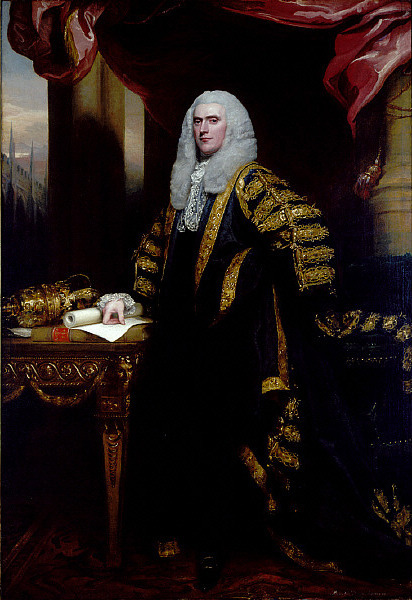
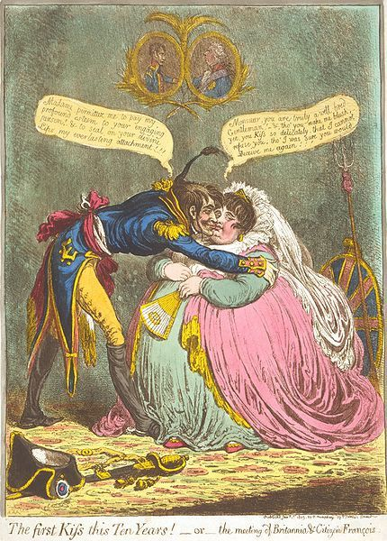
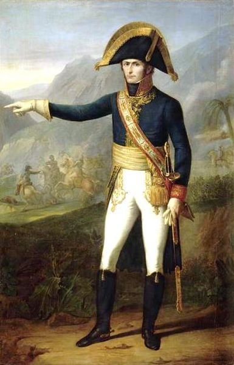
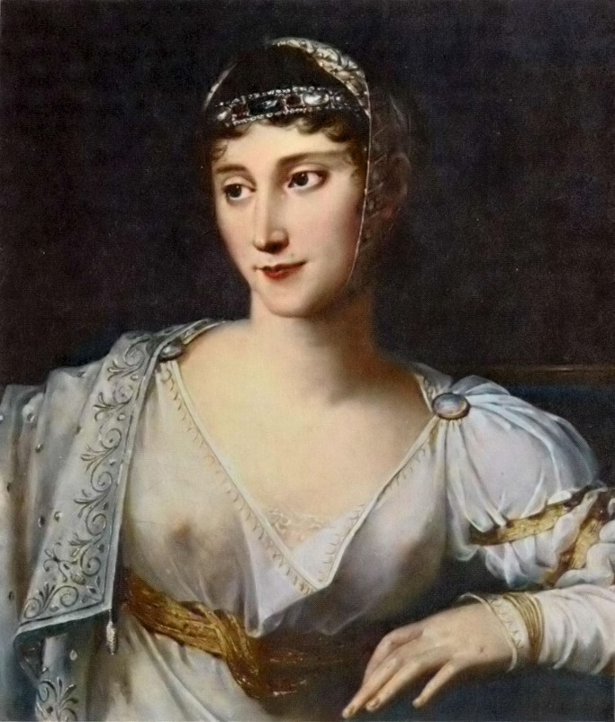

검은 나폴레옹 vs. 하얀 나폴레옹 - 대서양 너머의 사정 (중편)
게시: 2017-10-14T12:56:45+09:00
생 도밍그의 혼란과 살육을 뒤로 하고, 우리는 다시 아름답고 풍요로운 유럽 대륙으로 잠시 되돌아 오도록 하지요. 나폴레옹은 이 당시 무엇을 하고 있었을까요 ? 기억들 하실려나 모르겠습닉다만, 1800년 12월의 호헨린덴 전투 이후 나폴레옹은 적어도 군사적으로는 상당히 평화로운 나날을 보내고 있었습니다. 물론 나폴레옹 본인은 자신을 향한 암살 음모 등으로 무척 긴장된 나날을 보내고 있긴 했었지요. 아무튼 당시 아직도 프랑스와 군사적으로 대립 관계에 있던 나라는 영국이 유일했습니다. 그러던 1801년 2월, 영국에서 중요한 사건 하나가 일어납니다. 바로 영국 수상 피트 (William Pitt the Younger)의 사임이었습니다.

(피트 수상은 1759년 생으로서 나폴레옹보다는 10살 많았습니다. 그는 1783년 24세의 나이로 역대 최연소 수상이 되었고 재무부 장관도 겸임하면서 근대 세계 최초로 소득세를 도입하는 등, 많은 화제를 낳은 인물이었습니다. 가장 큰 화제거리는 불행히도 나폴레옹의 아우스테를리츠 승전 소식을 듣고 쇼크사한 사건이었지요...)
원래 나폴레옹은 오스트리아나 프로이센, 나폴리 왕국보다는 영국과 러시아가 유럽 정치 외교 역학에서 가장 중요한 두 나라라고 여기고 있었습니다. 이때 당시 몰타 섬을 둘러싸고 영국과 대립각을 세우던 파벨 1세가 암살됨으로써 약간 맥이 빠지긴 했지만, 그래도 그 뒤를 이은 알렉산드르 1세도 일단은 프랑스와 우호적인 관계를 가지려 했기 때문에, 나폴레옹을 위협하는 유일한 외국 세력은 바로 영국 뿐이었습니다.
문제는 이 영국이 나폴레옹조차도 어쩌지 못하는 대단한 상대였지요. 나폴레옹은 이집트 원정을 떠나기 전부터, 영국 침공은 도저히 불가능이라고 결론을 내렸었고, 그래서 이집트에서 돌아와 브뤼메르 쿠데타로 집권한 이후, 곧장 영국 외무 장관 그렌빌 경(William Grenville, 1st Baron Grenville)에게 화평 제의를 할 정도였습니다. 이기지 못할 상대와는 친하게 지내는 것이 낫다는 나폴레옹의 계산이었지요. 그러나 이 화평 제의는 제안한 사람이 무안할 정도로 단번에 거절되었는데, 그렇게 거절한 사람이 바로 대불 강경파이자 영국왕보다도 더 막강한 권력을 가졌던 영국 수상 피트 (William Pitt the Younger)였습니다. 피트의 견해에 따르면, 저 나폴레옹의 프랑스가 마음대로 활개치도록 내버려 두었다가는 영국에게 엄청난 위협이 될 초강력 대륙 세력의 탄생을 의미하는 것이었으므로, 좀 힘들더라도 초장에 밀어붙여 그 싹을 잘라버려야 했지요. 비록 그것이 영국 혼자만의 외롭고 힘든 싸움일지라 해도 말이지요. 결국 피트가 수상으로 있는 한 프랑스는 영국과 영원한 전쟁 상태에 있을 수 밖에 없었고, 그것이 뜻하는 바는 바다를 통한 통상 및 해외 진출은 꿈도 꾸지 말아야 한다는 것이었습니다.

(저 초록색 부분이 당시 프랑스가 넘겨 받은 루이지애나 땅덩어리입니다. 다만 당시 조약에서는 루이지애나라는 명칭만 씌여있었고 정확한 경계선에 대해서는 언급이 없어서, 훗날 그 땅을 다시 넘겨받은 미국과 스페인 사이에 갈등의 소지를 남겨 놓았습니다.)
이런 상황은 1800년 10월의 산 일데폰소 조약 (Treaty of San Ildefonso)으로 더욱 안타까운 것이 되었습니다. 프랑스와 스페인이 주로 이탈리아의 부르봉 왕가의 운명을 두고 체결한 이 조약에서, 스페인은 이탈리아 투스카니 지방을 부르봉 왕가를 위한 영토로 양보받는 대신, 6척의 74문짜리 전함들과 함께, 저 멀리 북미 대륙의 루이지애나 지방을 프랑스에게 양보하기로 했던 것입니다. 여기서 잠깐, 왜 미국의 루이지애나를 스페인이 프랑스에게 양보하나요 ? 당시 루이지애나는 아직 미국땅이 아니었습니다. 그리고 그 이름을 보면 상상할 수 있듯이, 원래 루이 14세의 땅으로서, 프랑스가 식민지로 개척했던 곳이었습니다. 그러다가 7년 전쟁에서 프랑스가 북미 대륙에서 영국에게 패배하여 북미 대륙에서 완전히 물러나면서 스페인에게 빼앗겼던 곳이었지요. 지금은 루이지애나 주가 멕시코 만에 붙은 작은 땅덩어리이지만, 당시 루이지애나라고 불리던 땅은 지금의 루이지애나 주는 물론, 오클라호마, 미주리, 캔자스, 아이오와, 네브라스카, 와이오밍, 몬태나 등등 사실상 지금의 미국 중앙부를 다 차지하는 엄청나게 넓은 땅이었습니다. 사실 당시 산 일데폰소 조약을 체결하던 당사자들도 이 땅이 대체 얼마나 넓은 땅인지 거의 이해하지 못하고 있었지요.

(산 일데폰소 조약을 체결한 당시 스페인 국왕 샤를 4세, 스페인 식으로는 카를로스 4세입니다. 이 양반은 그 아들 페르난도와 함께 스페인을 말아먹은 대표적인 혼군이었습니다.)
하지만 안다고 한들 뭔 소용이었겠습니까 ? 영국 해군이 대서양을 틀어막고 있으니 바다 건너 땅은 그야말로 그림의 떡이었습니다. 이런 상황은 당시 나폴레옹의 정부를 압박하던 재정 파탄과 맞물려 더욱 아쉬움을 더했습니다. 게다가 한때 유럽에서 소비되는 설탕의 40%를 생산하던 황금알을 낳는 거위, 생 도밍그의 '사실상의 상실'도 못내 아까운 일이었지요. 이 모든 것이 다 빌어먹을 영국 해군 때문이었습니다.

(피트의 사임을 풍자한 당시 만화입니다. 피트는 당시 전쟁과 중과세에 지친 국민들로부터 상당히 미움을 받고 있었지요.)
그런데 1801년 2월, 영국 수상 피트가 사임하는 사태가 벌어진 것입니다. 피트의 사임은 나폴레옹과는 전혀 무관한 영국 국내 정치 문제 때문이었습니다. 피트는 아일랜드 상황을 안정시키기 위해서는, 대부분이 카톨릭 교도인 아일랜드인들에게 좀더 유화책을 써야 한다고 생각했고, 그래서 '가톨릭교도 해방령 (Catholic Emancipation)'을 제출했습니다. 하지만 당시 국왕 조지 3세는 자신이 즉위할 때 맹세한 내용, 즉 영국 국교회를 수호하겠다는 맹세에 어긋난다며 이를 거부했고, 이것이 피트의 사임으로 이어졌던 것입니다. (결국 이 가톨릭교도 해방령은 1829년에 가서야 웰링턴 공작에 의해 통과됩니다.) 그리고 새 수상으로는 피트의 친구였지만 그와는 정반대로 대불 온건파였던 헨리 애딩턴이 취임했습니다. 사실 애딩턴 자신은 국왕과 피트 사이를 화해시키려고 노력했고 또 수상 직위를 거절했지만, 피트의 추천에 의해 거의 억지로 수상에 취임하게 되었습니다.

(애딩턴 수상의 위엄서린 모습입니다. 그의 취임은 피트와의 우정이 깃든 멋진 것이었으나, 그의 퇴임은 피트와의 갈등에 의한 보기 흉한 것이 되어버렸습니다.)
애딩턴은 거의 취임과 동시에 나폴레옹에게 평화 회담을 다시 시작하자고 연락을 보냈습니다. 왜 그랬을까요 ? 사실 전쟁은 프랑스에게만 괴로운 것이 아니었습니다. 프랑스나 스페인, 오스트리아같은 굵직한 시장을 잃어버린 영국 경제도 휘청이는 것은 마찬가지였지요. 결정적으로 전쟁, 특히 해군은 돈을 너무 많이 잡아먹었습니다. 당시 영국은 금태환을 거부할 정도로 재정난에 시달리고 있었고, 게다가 하늘도 무심한지 2년 연속으로 흉작이 들어 식량난까지 가중된 상황이었습니다. 무엇보다 전쟁 비용을 대느라 소득세(income tax)라는 당시로서는 듣도보도 못하던 새로운 세금까지 부담해야 했던 영국 국민들은 정부에 대한 불만이 폭발할 지경에 놓여 있었습니다. 이에 대한 유일한 해결책은 바로 프랑스와의 평화 조약이었지요. 나폴레옹은 이를 120% 활용했습니다. '아하 이것들이 우리만큼 어쩌면 우리보다 더 급했구나' 싶었던 나폴레옹은 평화 조약을 체결할 듯 말 듯 영국의 애간장을 태우면서 밀땅 놀이를 즐겼고, 결국 1801년 9월 30일, 예비 조약을 체결하고 이를 양국 국민들의 환호와 축하 속에 공식적으로 공표합니다. 이것이 정식 조약으로 체결된 것이 바로 1802년 3월 25일의 아미엥 조약(Treaty of Amiens)입니다.

(아미엥 조약을 풍자한 당시 영국 만화입니다. 제목은 the meeting of Britannia & Citizen Francois 입니다. 영국이 여자에요.)
이 아미엥 조약은 해외 진출을 노리고 있던 나폴레옹에게는 그야말로 날개를 달아준 셈이었습니다. 그의 궁극적인 목표는 북아메리카로 프랑스의 영토를 넓히는 것이었고, 그러자면 먼저 그 기지로서 생 도밍그가 필요하다는 판단이 섰습니다. 무엇보다도 생 도밍그는 다시 잘 가꾸면 황금알을 낳아주는 캐쉬 카우 (cash cow) 역할을 해줄 수 있는 기회의 땅이었습니다. 그러자면 무엇보다 생 도밍그를 장악하고 있는 투쌩 그 뭐라드라 하는 검둥이 노예를 손봐줄 필요가 있었지요. 나폴레옹은 이제 영국 해군의 봉쇄가 풀린 대서양으로 생 도밍그 원정대를 내보냅니다. 그 원정대의 규모는 약 2만명의 수병을 제외하고도 지상군만 대략 2만명으로서, 약 3만 5천의 병력을 동원했던 나폴레옹의 이집트 원정보다는 약간 작았습니다. 하지만 생각해보면 당시 인구 6백만에 면적도 광대한 이집트를 정복하는데 3만 5천이 필요했으니, 손바닥만한 면적에 총 인구도 40만명을 조금 넘는 생 도밍그를 정복하는데 2만명을 동원했다면 굉장히 많은 병력을 투입한 셈이었습니다. 게다가 그들을 실어나르는 함대의 규모도 굉장했습니다. 1801년 12월 14일에 최초로 출발한 선발대는 35척의 전열함에 21척의 프리깃이 포함되었고, 여기에 약 8천의 지상군이 탑승해 있었습니다. 맙소사, 35척의 전열함이라니 ! 트라팔가 해전에 동원된 영국 함대의 전열함이 겨우 33척이었는데요 ! 거기에다 다음해 2월까지 몇차례 함대가 추가로 파견되어 더 많은 병력을 생 도밍그로 실어날랐지요. 다만 이 원정대는 철저하게 2진급 부대로만 꾸며졌습니다. 일부 프랑스 사단에 덧붙여 투쌩에게 쫓겨난 뮬래토 장군인 리고 (André Rigaud)를 주축으로 한 뮬래토 부대도 포함되어 있었고, 네덜란드 사단과 폴란드 사단까지도 포함되어 있었습니다. 그리고 이들의 총지휘관에는 나폴레옹의 매제, 즉 폴린 보나파르트(Pauline Bonaparte)의 남편인 르클레르(Charles Victoire Emmanuel Leclerc)가 임명되었지요.

(르클레르 장군의 초상화입니다. 나폴레옹보다 3살 어렸던 그는 꽤 미남이었고, 그래서 폴린과의 결혼전 스캔달이 났던 것 같습니다.)
이 르클레르라는 장군에 대해서는 사실 그 이전에 별로 언급된 바가 없었지요. 그는 1793년 툴롱 포위전에서 나폴레옹을 최초로 만났습니다만, 그 이후에는 라인 방면군에서 주로 복무했고 1797년 나폴레옹의 이탈리아 원정 때부터 본격적으로 나폴레옹 밑에서 싸웠습니다. 그는 카스틸오네 전투와 리볼리 전투에 참전했고, 이때 장군으로 승진했습니다. 그리고 사실상 오스트리아의 항복 조약이었던 레오벤(Leoben) 조약에 참여했다가 돌아온 이후, 나폴레옹의 제안에 따라 나폴레옹의 여동생 폴린과 결혼했지요. 이후 그는 모로 밑에서 라인 방면군에서 복무하면서 나폴레옹의 브뤼메르 쿠데타를 지원했으며, 그 이후에는 역시 모로 밑에서 그 유명한 호헨린덴 전투에 참전했었습니다. 그러니까 나름 괜찮은 군 경력을 쌓고 있었던 것이지요. 하지만 생 도밍그 원정대의 총사령관으로 뽑힌 것은 확실히 나폴레옹의 매제라는 사적인 관계가 중요한 역할을 한 것은 확실해 보입니다.

(아, 저 X두가 보이는 의상은... 폴린의 과감함을 엿보게 합니다. 폴린의 자유분방함에 대해서는 정말 진실인지는 모르겠으나, 이런 이야기도 있지요. 그녀가 어느 화가의 스튜디오에서 모델이 되어 주었는데, 문제는 나체 모델이었다는 것이었고, 더 나쁜 것은 나폴레옹이 그 이야기를 듣게 된 것이었습니다. 나폴레옹이 노발대발하자, 폴린은 태연하게 이렇게 대답했다고 합니다. "괜찮아요, 스튜디오가 아주 따뜻하던 걸요." )
폴린과 르클레르의 결혼에 대해서는 이 둘이 소파에서 '붙어먹는' 장면을 나폴레옹이 목격하는 바람에 어쩔 수 없이 나폴레옹이 결혼을 시켰다는 설이 있지요. 하지만 그건 사실이 아닙니다. 폴린이 나폴레옹의 여동생들 중에서는 가장 미모가 뛰어나서, 성적으로 꽤 문란한 생활을 한 것은 맞다고 합니다. 하지만 당시 폴린은 마르세이유의 지사였던 스타니슬라스 (Louis-Marie Stanislas Fréron)와 사랑하는 사이였다고 합니다. 원래 이 스타니슬라스는 1793년 툴롱 포위전에서 나폴레옹과 연을 맺은 사람으로서, 나폴레옹은 원래 이 남자에게 여동생 폴린을 소개시켜주었고 결혼도 시키려 하였으나, 어머니 레티지아가 반대하는 바람에 무산된 바가 있었습니다. 그녀는 1797년에도 마음이 스타니슬라스에게 있었으나, 오빠의 강권에 따라 르클레르와 결혼했다고 합니다. 그래서인지, 폴린은 결혼 이후에도 성적으로 상당히 문란한 생활을 했다고 하네요.
생 도밍그로 원정대 총사령관직을 맡게 된 것은 르클레르로서는 상당히 파격적인 승진이기도 했습니다만, 반대로 큰 위기가 될 수도 있었습니다. 뭐니뭐니해도 생 도밍그는 황열병의 본고장이었으니까요. 어찌 되었건 르클레르는 폴린과 어린 아들도 이 원정대에 함께 데려갑니다. 폴린 본인도 남편이 생 도밍그의 주지사가 되어 자신과 함께 떠나는 것에 대해 나름 기뻐했다고 합니다.
이렇게 르클레르와 폴린을 태우고 1801년 12월 중순 출항한 프랑스 함대는 약 6주 후인 1802년 1월말, 드디어 생 도밍그 인근 해역에 집결합니다. 과연 유럽 대륙을 제패한 프랑스 정예병들과 생 도밍그의 태양 아래서 단련된 노예 출신의 검은 병사들의 충돌 결과는 어땠을까요 ?